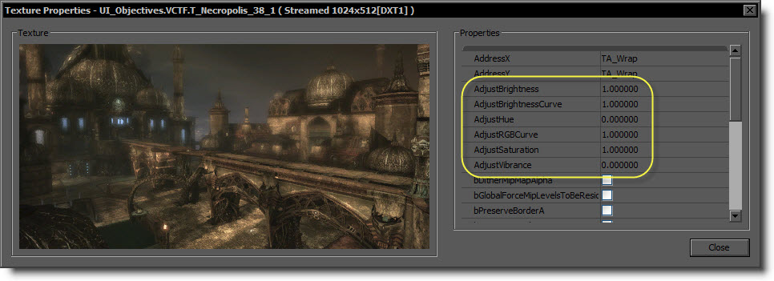
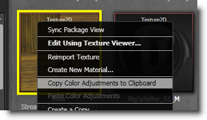
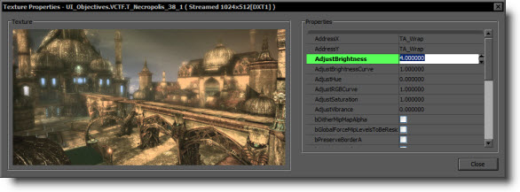
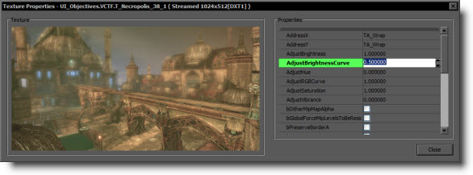
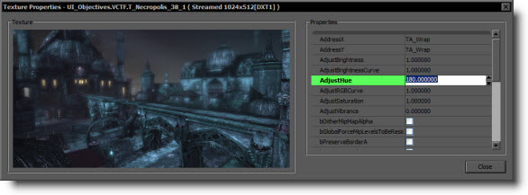
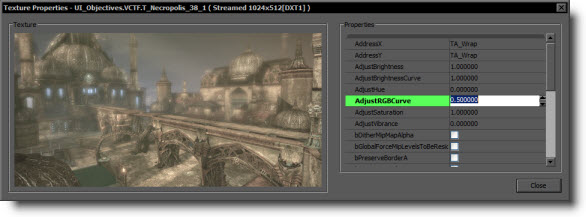
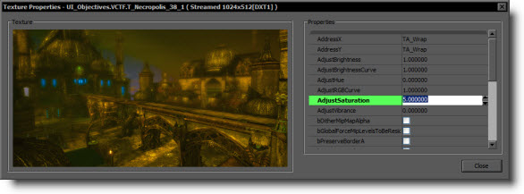
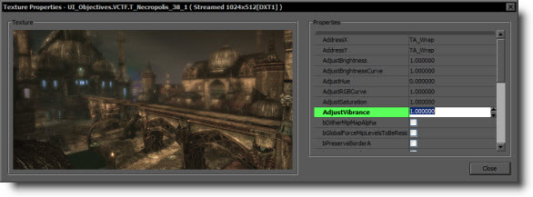

UDN
Search public documentation:
TextureProperties
日本語訳
中国翻译
한국어
Interested in the Unreal Engine?
Visit the Unreal Technology site.
Looking for jobs and company info?
Check out the Epic games site.
Questions about support via UDN?
Contact the UDN Staff
中国翻译
한국어
Interested in the Unreal Engine?
Visit the Unreal Technology site.
Looking for jobs and company info?
Check out the Epic games site.
Questions about support via UDN?
Contact the UDN Staff
Texture Properties
Overview
Texture Info
Properties
Color Adjustment Settings
The following properties allow you to adjust the texture's color without modifying the actual source art. These changes are applied at compression-time.  Note that you can easily transfer for these settings between textures! Just right click on a texture and select Copy Texture Adjustments to Clipboard, then select one or more destination textures, right click and select Paste Texture Adjustments. The settings will be transferred to all of the selected textures. Note that this may take awhile as the textures may need to be recompressed. AdjustBrightness
Scales the brightness of the texture by multiplying the HSV Value component by the number specified. Values greater than 1.0 increase the brightness of the image, while values less than 1.0 will decrease the image brightness. You can enter whatever number you want, but the final V value will be clamped between 0.0 and 1.0 (per pixel.) The default for this setting is 1.0.  The above image has been modified with AdjustBrightness set to 5.0.AdjustBrightnessCurve
Modifies the brightness of the texture using a curve. Each pixel has its HSV Value component raised to the power specified. This scales the image brightness non-linearly using curve defined by the power function. Values less than 1.0 increase the brightness of the image, while values greater than 1.0 will decrease the image brightness. You can enter whatever number you want, but the final V value will be clamped between 0.0 and 1.0 (per pixel.) The default for this setting is 1.0.  The above image has been modified with AdjustBrightnessCurve set to 0.5.AdjustHue
Modifies the image hue by shifting the HSV Hue component along the color circle by the specified number of degrees (0.0 - 360.0). Very small numbers will slightly tint the color of your image, while large number may change the color radically. If you use a number outside of the 0.0 - 360.0 range, then the hue will "wrap" to a number within that range. The default for this setting is 0.0.  The above image has been modified with AdjustHue set to 180.0.AdjustRGBCurve
Modifies the brightness of the texture using a curve. Each pixel has its linear-space RGB values raised to the power specified. This scales the image brightness non-linearly using curve defined by the power function. Values less than 1.0 increase the brightness of the image, while values greater than 1.0 will decrease the image brightness. You can enter whatever number you want, but the final value will be clamped between 0.0 and 1.0 (per pixel.) The default for this setting is 1.0.  The above image has been modified with AdjustRGBCurve set to 0.5.AdjustSaturation
Scales the texture's color saturation by multiplying the HSV Saturation component by the number specified. Values greater than 1.0 increase the saturation, while values less than 1.0 will decrease the image saturation. A value of zero will result in a fully greyscale image. You can enter whatever number you want, but the final S value will be clamped between 0.0 and 1.0 (per pixel.) The default for this setting is 1.0.  The above image has been modified with AdjustSaturation set to 5.0.AdjustVibrance
Adjusts the texture's saturation using a number between 0.0 and 1.0. This applies a custom algorithm that attempts to increase the saturation of colors that are naturally less saturated. This is useful when you want to bring the less-saturated parts of a texture up to match the other already-saturated pixels. The default for this setting is 0.0.  The above image has been modified with AdjustVibrance set to 1.0.MipGenSettings
This option allows to customize how the content of the mip-map chain looks like. The Setting "Simple Average" works very similar to the old method before the setting became available (average content of 4 pixels/texels to one). Unfortunately the usage of mip-maps can reduce texture details. In order to counteract the blurring the mip-mapping introduces it's possible to sharpen the image during down-sampling to restore some of the information loss. Used to a limited amount (values up to 4 or 5) it can help to increase the image quality without performance loss or memory cost. Using strong sharpening (values bigger than 6) can result in dark or bright borders around the image content but this might be acceptable in certain situations (depending of art style and texture content). Often you can leave the setting to "FromTextureGroup" when the actual MipGenSettings are grabbed from the texture group stored in the global INI file. This is the relevant section in "DefaultEngine.ini":... TEXTUREGROUP_WeaponSpecular=(MinLODSize=128,MaxLODSize=512,LODBias=0,MinMagFilter=linear,MipFilter=point,MipGenSettings=TMGS_Sharpen_0) TEXTUREGROUP_World=(MinLODSize=256,MaxLODSize=1024,LODBias=0,MinMagFilter=aniso,MipFilter=point) TEXTUREGROUP_WorldNormalMap=(MinLODSize=256,MaxLODSize=1024,LODBias=0,MinMagFilter=aniso,MipFilter=point,MipGenSettings=TMGS_Sharpen_1) TEXTUREGROUP_WorldSpecular=(MinLODSize=128,MaxLODSize=512,LODBias=0,MinMagFilter=linear,MipFilter=point,MipGenSettings=TMGS_Sharpen_2) ...The setting is defined with the key "MipGensettings" and the value is the same name shown in the texture settings (e.g. "TMGS_Sharpen_2"). If not specified the default setting "TMGS_SimpleAverage" is used. Note: It's advised to have have some mip sharpening (e.g. TMGS_Sharpen4) defined for all color textures. Normal maps or other textures not storing colors might also get more detail on the first sight but it actually might get worse (e.g. distorted surface normals, aliasing speculars). When changing the setting in the ini file all former textures still have the old setting and to bring the project to a consistent state and to see the actual effect of the setting everywhere all texture need to be reexported. Late in the project this can take quite some time and labor. Details: This option allows to customize the filter kernel size and the weights of the filter kernel that is used during the down sampling operation when generating mip-maps. Mip-map generation happens during importing of the texture and creates a mip-map chain for the texture. The mip-map chain consists of multiple levels of the sample image, each half the resolution of the level before. That data allows the graphic card to render faster when using the lower mips (less memory bandwidth) and also reduces the texture aliasing (shimmering) that becomes visible when having detailed texture in certain distances. The setting has no performance impact at runtime as it only affects the mip-map generation (during importing or when changing the setting). "SimpleAverage" uses a 2x2 kernel size, all "Sharpen..." use a 8x8 kernel and some negative weights to sharpen. "Sharpen0" is not sharpening but still uses the quality down-sampling filter all "Sharpen..." use (4x4 Gaussian kernel). Compared to "SimpleAverage" it appears blurrier but higher quality. When using color content the sharpening is not processing the color channels independently. Then luminance is done as defined and the chrominance (color) information is down-sampled without sharpening (currently 2x2 but 4x4 Gaussian would be possible as well). This avoids a color shift in some extreme cases. Sharpening also helps to improve the DXT compressor as the compression of subtle color shades is limited.